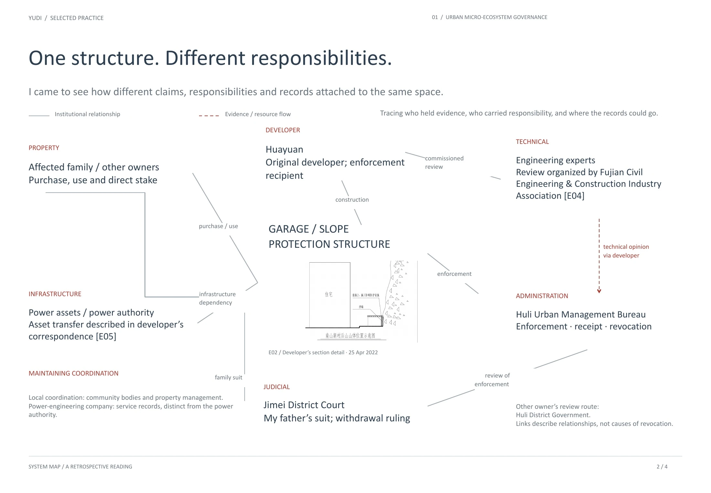
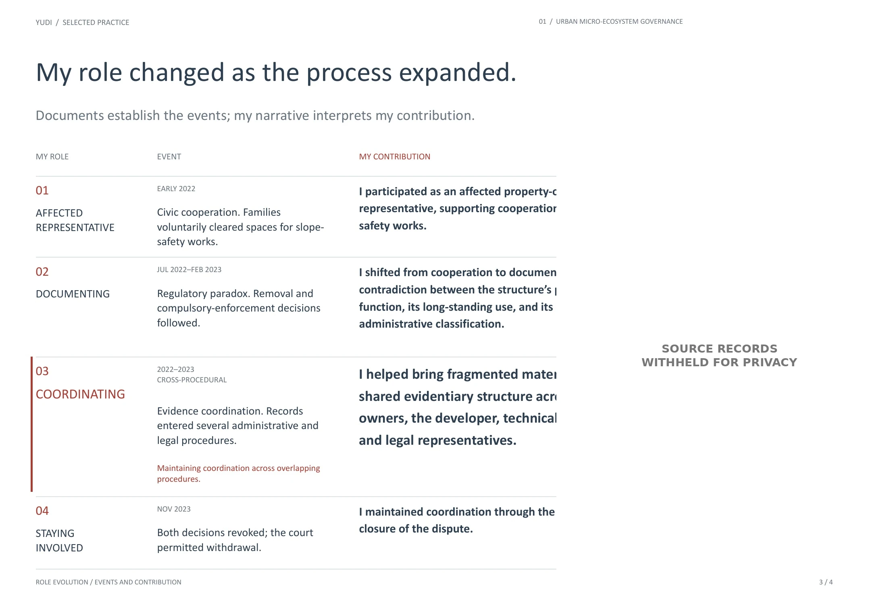
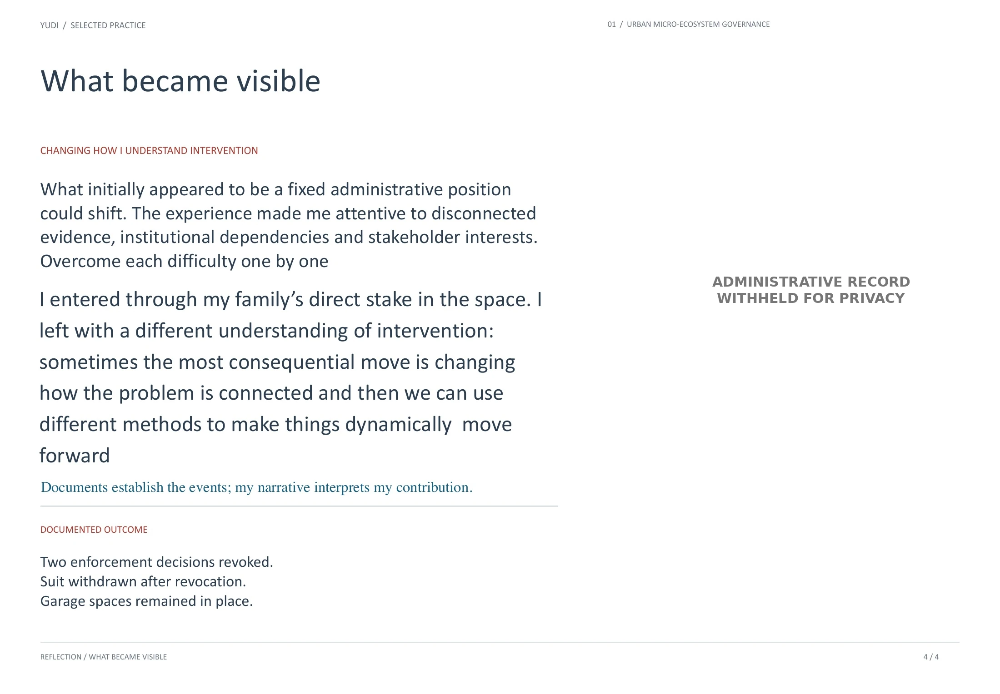

01 / COORDINATION · CIVIC SYSTEM
Urban Micro-Ecosystem Governance
How can different actors build a shared basis for action within the same reality?
A neighborhood property dispute became an experiment in civic coordination. As an affected family member, I helped organize residents, assemble evidence across fragmented administrative systems, and coordinate a collective response without formal legal representation.
The slides below follow the project from a direct stake in the space, through contradictions across institutions, to a changing role and documented outcome. Personal and administrative records have been withheld where they could expose private details.




A QUESTION THAT REMAINS
How can people create workable forms of governance when existing systems do not clearly account for their position?
Return to index ↑